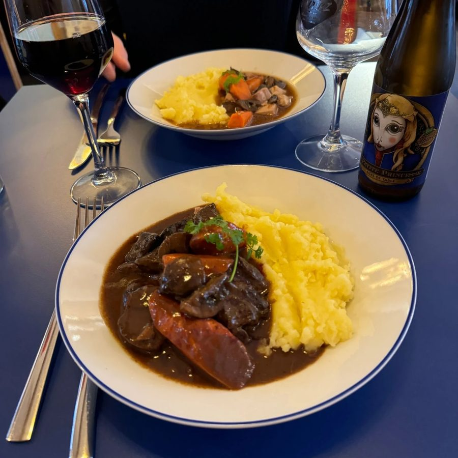
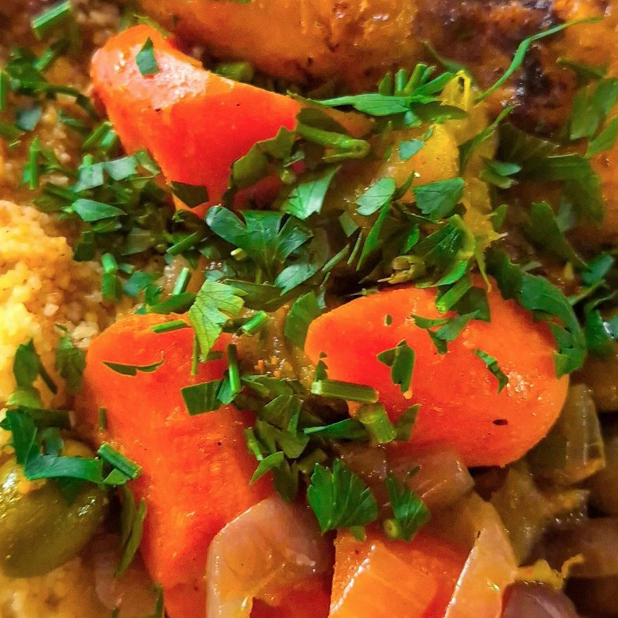
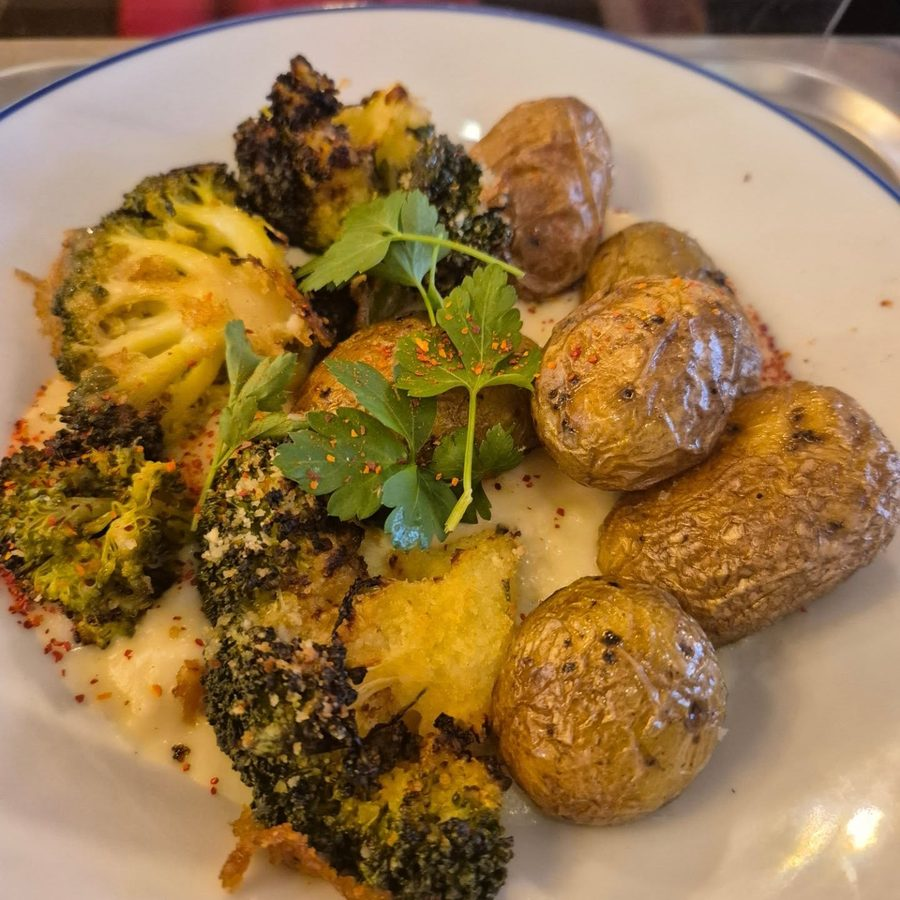

Tout est dada.
Tout est fait maison.
Une cuisine éthique, de qualité et savoureuse, pour tous. À consommer sur place ou à emporter.
Le midi
Du lundi au vendredi, 12h – 14h30, DADA se transforme en cafétéria : 3 propositions chaque jour — carné, végé, végan. Options sans gluten & sans sucre. Sur place ou à emporter.
- Plat du jour + accompagnement14 – 16€
- En formule (+ grignotage ou dessert)+3,5€
- Formule enfant
À grignoter, à toute heure
Sucré, salé, ça dépend des jours et de l'humeur de la cuisine : de quoi grignoter du matin au goûter, toujours fait maison.
Ce qu'il y a aujourd'hui ? C'est sur l'ardoise, ou sur Instagram.
Cafés & réconforts
- Expresso ou chicorée2€
- Allongé2€
- Noisette2,5€
- Café crème3€
- Double expresso · Cappuccino3,5€
- Americano · Cold brew · Flat white4€
- Latte · Iced latte4,5€
- ⭐ MUM (chicorée-vanille-avoine)4€
- ⭐ Latte Dadahuète6€
Sans caféine & douceurs
- Thé ou tisanes4€
- Chocolat chaud5€
- Chaï5€
- ⭐ Golden latte5€
Chicorée ou café · chaud ou froid · lait de vache ou lait d'avoine. Suppléments +1€ : sirop artisanal · lait d'amande · chantilly.
Sirops maison : amande, bergamote, caramel, cassis, fleur de sureau, fraise, gingembre, grenadine, lavande, noisette, orgeat, pistache, menthe, vanille, yuzu.
Jus, bulles & autres soifs
- Sirop à l'eau2€
- Diabolo3,5€
- Eau plate / gazeuse — 50cl3,5€
- Eau plate / gazeuse — 1L5€
- Jus de fruits bio — 20cl3,5€
- Ginger beer au verre3,5€
- ⭐ Boisson maison du moment3,5€
- Lait sirop4€
Fermentés & bulles · 33cl
- Cola4,5€
- Kéfir du moment5€
- Kombucha du moment5€
- Orangeade5,5€
- Pet'nat blanc UMA6,5€
Options vegan, sans gluten, sans sucre & sans lactose disponibles.
Bières pression
- Luxe du moulin 5,3° — blonde douce3 / 4 / 5€
- Les Québécoises 5,5° — blonde au froment3,5 / 5 / 6€
- Bière du moment4,5 / 6,5 / 8€
Tarifs 25cl / 33cl / 50cl.
Bouteilles
- Cidre Fils de Pomme 5,5° 33cl5,5€
- Bières Thiriez 33cl5,5€
- Grisette (sans gluten) 5,5° 25cl4€
- Même pas mal (sans alcool) 0,5° 33cl5,5€
- Pet'Nat blanc UMA (sans alcool) 33cl6,5€
Vins bio & nature
Au verre (14cl) / bouteille.
- Rouge — Côte du Rhône5€ / 20€
- Rouge — Grenache noir6€ / 24€
- Blanc — Sauvignon5€ / 20€
- Blanc — Viognier7€ / 28€
Bouteilles sur demande : vin orange, pétillant naturel.
Cocktails
- Gin tonic · Moscow mule · White russian8€
- Bloody mary · Amaretto sour · Madeleine8€
- Espresso martini9€
Spiritueux
- Ricard 2cl2,5€
- Amaretto 4cl5€
- Cognac Domaine Pinard · Génépi Bigallet 4cl7€
- Porto Réserve Romariz 7cl · Rhum épicé 4cl7€
- Genièvre bio 4cl7€
- Whisky bio 4cl9€




Carte indicative, susceptible d'évoluer au fil des saisons et des envies. 🐎